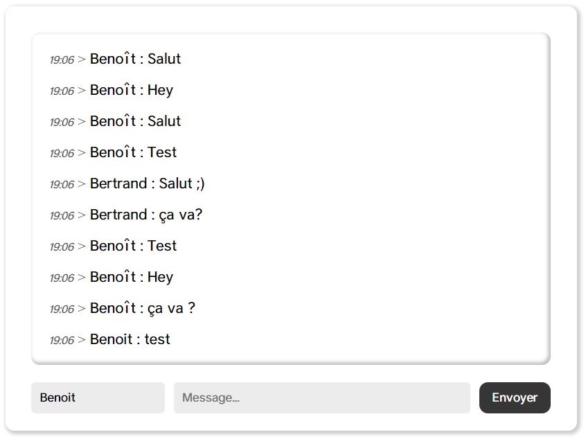

This simple live chat was made using jQuery and PHP to interact with MySQL database.
Besides that, this work has nothing specific in itself, it's just a clean project with clean interface and working backend.

This little work was important to my yes because it allowed me to understand how AJAX works, and what asynchronous functions can offer in so many projects.